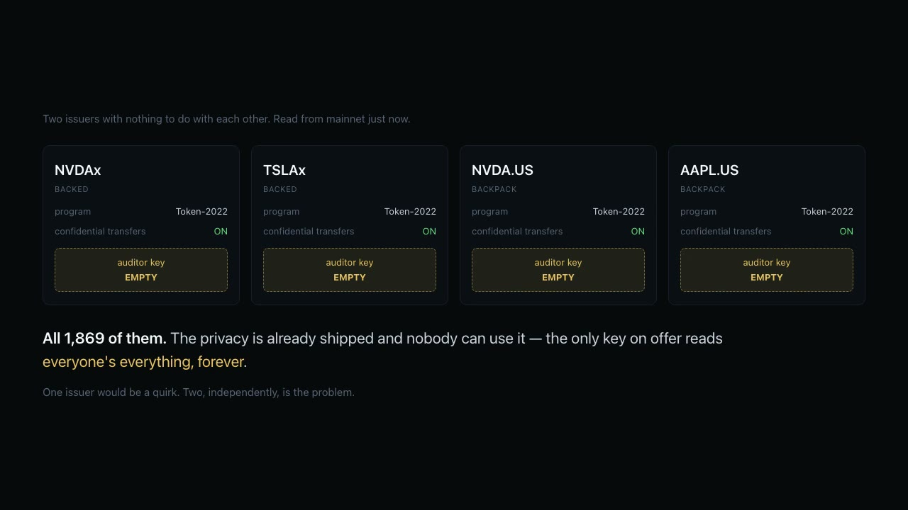

Stock for stablecoin, in one transaction. Neither side publishes what moved.
Confidential delivery-versus-payment for tokenized stocks on Solana
— a stock-to-stablecoin swap in one transaction, with neither side publishing what
moved. Confide builds the zero-knowledge proofs the chain will not assemble for you, and lets
each side check the other's amount before signing — with nobody in the middle.
The chain readings on this page are live, made in your browser. The mint list and the
proof transactions are files served with the page; everything they are used to ask is asked of
mainnet and devnet now.
A trade that settles without publishing either side.
Three real devnet transactions, fetched and decoded here by your
browser.
reading devnet…
1,992
tokenized stocks ship
confidential balances — every one of them
330,266
live token
accounts across Apple, NVIDIA, SpaceX and Anthropic
0
of them are confidential.
Nobody has ever opened one.
Read from mainnet and counted by scripts/usage-scan.sh.
The feature is shipped on every mint and gated on every mint, and no issuer has signed for an
account yet — so there is no incumbent here and nothing to be late to.
Go and do it yourself. Two minutes, devnet, nobody's permission.
There is a standing issuer on devnet whose gate is shut exactly as all 1,992
are — and whose approval key is published in the repository. So you can open a
confidential position and hold something the chain reports as zero:
Needs the Solana CLI, Rust and a little devnet SOL. The key can approve
accounts and cannot mint, which is checked rather than claimed —
docs/TESTBED.md.
Everything below is the evidence. Nothing above depends
on you reading it.
Why there is nothing in the middle
Two Token-2022 instructions, two signatures, and Solana's atomicity where a
clearing house would be. What Confide does is everything around that: the zero-knowledge
proofs the chain will not assemble for you, verified on chain and citable by address, and the
check that lets each side read the other's amount before signing.
Delivery versus payment is what a clearing house exists for — neither
side will go first, so finance inserts a central counterparty, membership, margin and a day of
lag. A transaction that is all-or-nothing needs none of it. Run it:
MODE=dvp ./scripts/swap-e2e.sh.
The amounts are encrypted, so a party could be asked to sign a leg that underpays. Each
side answers that before signing and alone: a confidential transfer encrypts the amount
under the recipient's key too, so the recipient decrypts it straight out of the
already-verified proof context (swap-check). No trust, no third
party, nothing revealed to anyone else.

The presentation, 2:22 — the trade, the count, and what is left.
Click the frame, or
watch on YouTube
(youtu.be/gilIzns5joM). Every terminal pane in it is the stdout of a command run
moments before the recording; two of them reach mainnet and devnet.
Why anybody wants it
Everything above is what runs. This is the market it runs into, read
from mainnet by your browser rather than asserted.
Why no issuer's mint escapes it
1,992 tokenized stocks on Solana run on Token-2022 with confidential transfers
switched on. Every one of them leaves the auditor key empty — because the only key
on offer reads everyone's everything, forever, and no setting of that is correct for a regulated
issuer.
Read from mainnet, just now, by your browser. NVDAx and TSLAx are
Backed's; NVDA.US and AAPL.US are Backpack Securities'. Three issuers, arriving
independently at the same empty slot — that is the finding, and all 1,992 mints check the same
way (scripts/slot-scan.sh).
The count, mint by mint
Every token account on each of these mints, and how many carry the extension
that makes a balance confidential.
reading usage.json…
Counted by scripts/usage-scan.sh against mainnet,
not by this page — a scan of a third of a million accounts is not something to run in a
browser tab. Size is only the cheap filter: the first pass found seven large accounts on Apple
xStock and every one was large for an unrelated extension, so the check reads the
extension list. There is no incumbent here and nothing to be late to.
Meanwhile, anyone can read anyone.
Wallets that touched NVDAx in the last few transactions, and what they held
when it settled. These are the balances the transaction itself published, not a lookup of what
they hold now — which is the point: the number was public the moment it landed.
Try any address — yours, or one you know. The page reads its recent transactions.
Paste an address above.
The same position, under Confide.
A live account on devnet. The chain shows nothing. The position is there.
Its mint gates new accounts exactly as NVDAx does —
autoApproveNewAccounts: false — so the issuer had to sign before
this account could hold anything. On a real mint that signature is a conversation, not a
transaction, which is the one thing here that cannot be done without them.
A lender can check your collateral without seeing it.
The half that waits on a venue. Everything
above needs nobody's permission; this needs a lending market that can price a balance it cannot
read. Ask the decision page whether Kamino can take any of the 1,992
as collateral today — it reads the mint from mainnet in your browser and answers against
Kamino's own pinned rules.
A lender needs one bit: does the collateral cover the loan? Two proofs
answer it over the account's own on-chain ciphertext — equality binds a commitment we can open
to the account, then the range proof runs on the surplus. Press the button and Solana's ZK
program will check them, right now, from your browser.
And a lender can now take it — a transfer the borrower authorises at
origination and cannot later refuse, parked on chain under an authority they cannot close and
fired by a program that owns the escrow. No key reconstructed, no committee asked, the amount
never revealed. The floor is proved on chain against the escrow's own ciphertext; the price is the loan's to establish, and the chain enforces the
consequence. It runs on devnet: the
loan
account still reads seized.
The proofs were generated by scripts/prove-collateral.sh
over the account above; the verification you just triggered is live.
Both endings, read off the chain by your browser
An escrow has two exits and a loan can only take one. These are two real
loans on devnet, decoded here from their own account data — the flags below are read from
the chain, not from anything this site stores.
reading devnet…
Run either one yourself: ./scripts/seizure-e2e.sh
for the default, MODE=release ./scripts/seizure-e2e.sh for the
return. The borrower signs nothing after the handover in either case, and neither account ever
shows what moved.
Last quarter's number cannot be tidied.
An LP is owed a position report every quarter. Today that number is written
afterwards, and nothing binds it to what was actually held on the reporting date. Confide seals
the position that day — over the account's own ciphertext above — and anchors a
32-byte commitment on chain. Forty-five days later a committee opens it. The holder is not
one of them, and a figure restated in the meantime does not open the commitment.
reading devnet…
Written by scripts/anchor-receipt.sh, opened by
scripts/committee.sh — five separate processes, and the holder's
exited in September. Nothing about the position is on chain: a hash and two dates.